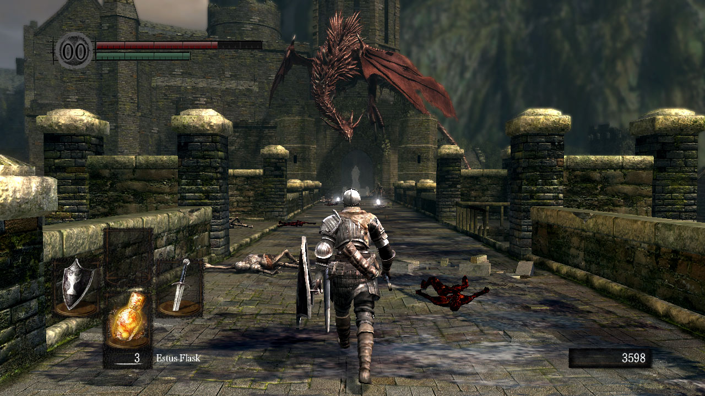

Серия игр Souls объединяет ряд компьютерных игр в жанре Action/RPG, разработанных японской компанией FromSoftware. Создателем серии и её основным разработчиком выступает Хидетака Миядзаки, руководивший разработкой всех игр серии, кроме Dark Souls II. Первой игрой серии является Demon’s Souls (2009), последней — ремейк Demon’s Souls (2020). Геймплей игр серии Souls основан на исследовании мира, состоящего из ряда взаимосвязанных уровней, и сражениях с различными чудовищами с использованием холодного оружия; игрок управляет персонажем с видом от третьего лица.
Серия известна своей высокой сложностью — от игрока ожидается, что он часто будет проигрывать битвы и учиться на своих ошибках. Серия Souls является преемницей серии King's Field (англ.)рус., выпускавшейся той же компанией в прошлом, и заимствует из неё некоторые элементы. В свою очередь, другие игры, выпущенные FromSoftware вне серии Souls — Bloodborne, Sekiro: Shadows Die Twice и Elden Ring — содержат схожие с серией Souls игровые механики, элементы и идеи, настолько, что для описания серии Souls и Bloodborne вместе иногда используется название Soulsborne. Игры серии и в особенности их боевая система оказали большое влияние на жанр Action/RPG в 2010-х годах, породив множество подражаний и заимствований — поджанр soulslike.